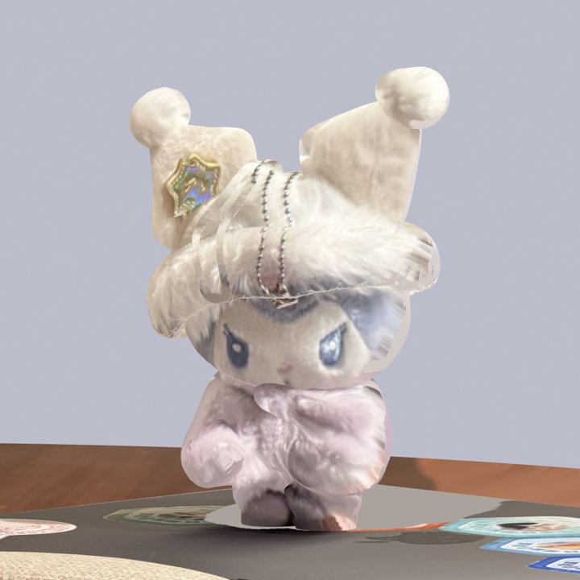
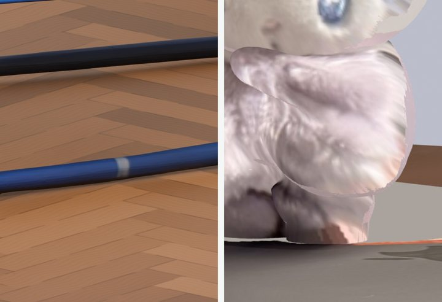

How the reconstruction agent works
A coding agent turns photographs into an editable Blender scene. It picks a policy from a library, calls reusable skills and geometric tools, and revises the scene until visual, geometric and physical checks pass. Press play to follow one run in each domain: a single-image tabletop, a multi-view room, and an outdoor landmark.
—
Images are actual intermediate outputs from released runs. Log lines are a simplified view of the agent's steps; failures shown in red illustrate when the review loop triggers a revision.
22 skills, shared across policies
A policy lists the steps for a class of scenes. A skill is a reusable procedure, saved as a SKILL.md file: when it applies, which tools it calls, how its output is checked, and where it came from. Policies point to skills instead of copying them, so the same skill can serve a tabletop, a room and a landmark. Click a card for details. Filter to see which skills a domain uses.
Names and descriptions come from the front matter of each skills/*/SKILL.md in release v-20261108; grouping follows the supplement's skill table. Domain tags show typical use under the released policies; the task policy decides applicability for each run.
A skill learned on tabletops, reused in rooms
After each run the agent keeps its record of failed checks, attempted fixes and outcomes. A recurring failure can lead it to propose a new skill. Candidates are tested end to end before they enter the library.

A tabletop scene passes an external physics check, but objects in the saved Blender file are not supported correctly.

The agent proposes and implements saved-state support/physics: reopen the saved file, simulate 5 s in Bullet, check every body.

Rooms have the same support requirements, so the room policy references the skill without copying it.
Mean gain in object stability from the support/physics skill on two unseen rooms (93.5% vs 39.1% and 60.5% vs 19.8% stable).
Recorded tokens over two four-scene GraspClutter6D sequences when the agent revises its own policy and skills, versus a frozen library.
A reimplemented REST3D support-tree candidate overlapped existing support handling and showed no benefit, so it did not enter the library.
Mean stability gain on three rooms, with geometry and camera accuracy nearly unchanged (F-score +0.027, camera error +0.1).